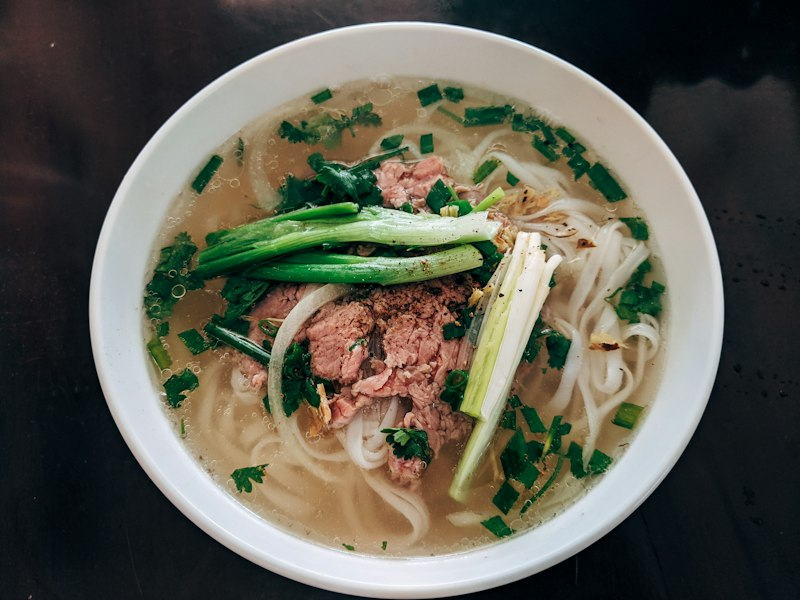
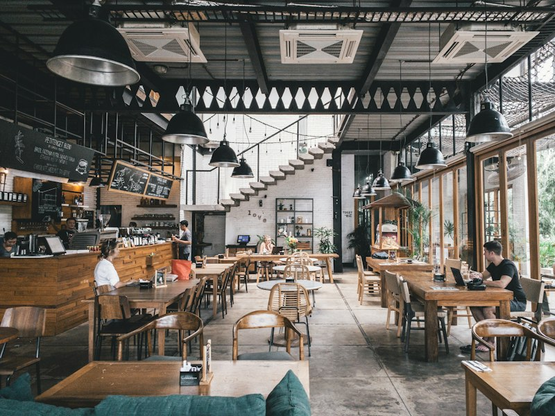

100% Farm-Fresh Daily
All fresh vegetables, herbs, and premium meats are delivered every morning from certified local organic farms.
Discover the culinary traditions of Vietnam. We take pride in serving wholesome, authentic dishes prepared with farm-fresh ingredients, honoring age-old family recipes with contemporary hospitality.

Founded in 2016, FoodVietNamShop started with a simple yet passionate mission: to preserve and share the authentic aromas and timeless dishes of Vietnamese cuisine across all three regions—North, Central, and South.
From a simmering bowl of Hanoi-style beef Pho to flavorful charcoal-grilled Bun Cha and crisp spring rolls, every recipe is crafted to bring people together in a warm, welcoming environment where every guest feels like family.
Master cooks dedicated to traditional techniques and balance of spices.
Carefully curated recipes reflecting distinctive cultural traditions.
Great food begins with integrity. We hold ourselves to the highest standards of culinary quality, nutritional value, and food hygiene.
All fresh vegetables, herbs, and premium meats are delivered every morning from certified local organic farms.
We strictly avoid artificial flavorings, synthetic food colorings, and harmful chemical preservatives.
Our signature broths are slow-simmered for 12 hours with marrow bones and ginger for pure, natural sweetness.
Our hygienic open kitchen and clean preparation process comply fully with strict international safety standards.
Immerse yourself in our cozy atmosphere, modern Vietnamese interior, and culinary presentations.





Hear from food lovers and local diners who have visited FoodVietNamShop.
"The beef pho broth is authentically rich, pure, and aromatic without any artificial aftertaste. The atmosphere is warm and the hospitality is top-notch!"
"We come here every weekend with our family. The vegetables and herbs are always crisp and fresh, and we have complete peace of mind about food safety."
"Superb crispy spring rolls and charcoal-grilled Bun Cha. One of the very best Vietnamese culinary dining experiences in the city!"
Visit FoodVietNamShop today or order online to enjoy freshly cooked, exquisite Vietnamese specialties!